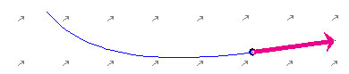
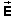
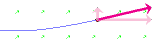
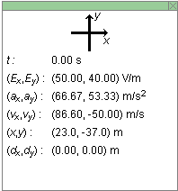
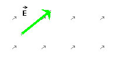
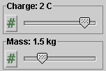
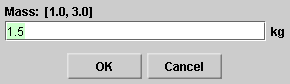

There are four basic control buttons. One of these, the Play/Pause button, is a dual button. The buttons are, from left to right:
-
 Returns
the simulation to the starting point with the
previously chosen initial values and system parameters.
Rewind makes it easy to compare motions that differ in
the setting of just one parameter. After clicking
Rewind, click Play to restart the motion or Step to go
through the motion one step at a time.
Returns
the simulation to the starting point with the
previously chosen initial values and system parameters.
Rewind makes it easy to compare motions that differ in
the setting of just one parameter. After clicking
Rewind, click Play to restart the motion or Step to go
through the motion one step at a time.
-
 Clicking
the Play button starts the motion of the particle.
Clicking
the Play button starts the motion of the particle.
 After
the Play button has been clicked, it changes into a
Pause button. Click the Pause button if you want to
get a 'snapshot' of the motion at a given instant.
When the Pause button has been clicked, it reverts
into the Play button. To resume the motion, click
Play once more.
After
the Play button has been clicked, it changes into a
Pause button. Click the Pause button if you want to
get a 'snapshot' of the motion at a given instant.
When the Pause button has been clicked, it reverts
into the Play button. To resume the motion, click
Play once more.
-
 Lets you
step through the motion in equal time steps.
Lets you
step through the motion in equal time steps.
-
 Resets
the applet to its default setting. The button is on the
far right so that it does not get pressed accidentally
in place of Rewind.
Resets
the applet to its default setting. The button is on the
far right so that it does not get pressed accidentally
in place of Rewind.
Adjustments in the initial conditions and system parameters can only be made after first clicking REWIND or RESET.

Displays or hides the charged particle's path in cyan, which is shown in the following snapshot.

The path is not erased when you Rewind the applet.

Displays a coordinate grid with 100-m divisions. The origin of the grid is at the tail end of the  vector.
Displays or hides the velocity vector (magenta). See snapshot in Number 2 above.

Allows to display or hide the (x,y)-components of the velocity vector. The components are shown in a pale shade of the velocity color, as in the following snapshot:


The Data toggle button displays/hides the Data box shown below. The Data box can also be closed by clicking in the little square marked by an "X" in the top right corner of the box. The Data box can be dragged anywhere within the applet window.

The following information is displayed in the Data box.
- orientation of the (x,y)-axes
- time t elapsed from the beginning of the motion
- (x,y)-components of the electric field vector
- (x,y)-components of the particles's acceleration
- (x,y)-components of the particle's velocity
- (x,y)-components of the particle's displacement from the beginning of the motion
Allows you to enter the magnitude and direction angle of the electric field (type the values in the data fields and then press ENTER on the keyboard). The direction angle is defined relative to a compass direction that you can change by selecting a choice on the drop-down menu next to the electric field data fields. Alternately, you can drag the tip of the green arrow which represents the electric field vector. The values in the data fields will be updated automatically.

The maximum electric field magnitude that can be entered is 90 V/m. If you type a larger value and press ENTER, your value will be reset to 90 V/m.
The values of the (x,y)-components of the field vector are displayed in the Data box. (See Item 6.)
The electric field is uniform throughout the applet window, as indicated by the little grey arrows.
Allows you to enter the magnitude and direction angle of the velocity. After typing the values, press ENTER on the keyboard. The angle is defined according to one of eight compass modes that can be selected from a drop-down menu.
The maximum velocity magnitude that can be entered is 300 m/s. If you type a larger value and press ENTER, your value will be reset to 300 m/s.
The magenta velocity vector (see Item 4 above) is updated as a new set of values is entered in the data fields. Vice versa, dragging the tip of the vector causes the values in the data fields to be updated.
The (x,y)-components of the velocity vector are displayed in the Data box. (See Item 6 above.)
There are two sliders, shown in the following image. Clicking on a slider to the left or right of the slider tab allows fine adjustment of the slider setting.

Clicking on the Input Dialog button  of a slider will open a dialog for entering an
exact value for the slider setting. The dialog for the
Mass-slider is illustrated below. The range in which
values can be entered, from 1.0 kg to 3.0 kg in this
case, is indicated above the data entry field.
of a slider will open a dialog for entering an
exact value for the slider setting. The dialog for the
Mass-slider is illustrated below. The range in which
values can be entered, from 1.0 kg to 3.0 kg in this
case, is indicated above the data entry field.

The two sliders in the control panel allow you to adjust the values of the following quantities.
- Charge. Allows you to vary the charge q of the particle in integer steps from -3 C to 3 C.
- Mass. Allows you to vary the mass m of the particle in 0.1-kg steps from 1.0 kg to 3.0 kg.